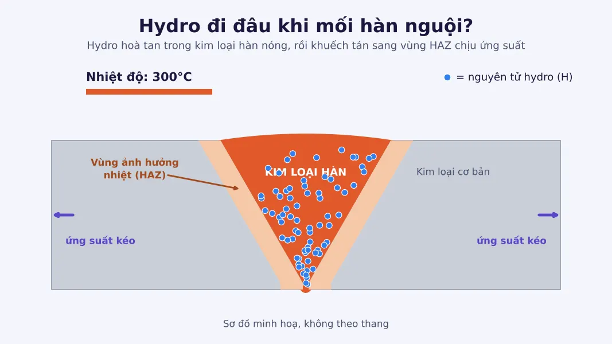
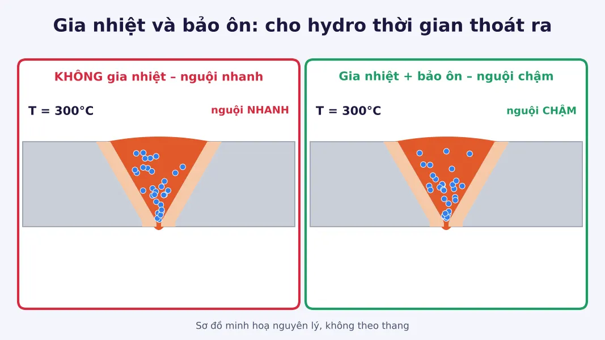
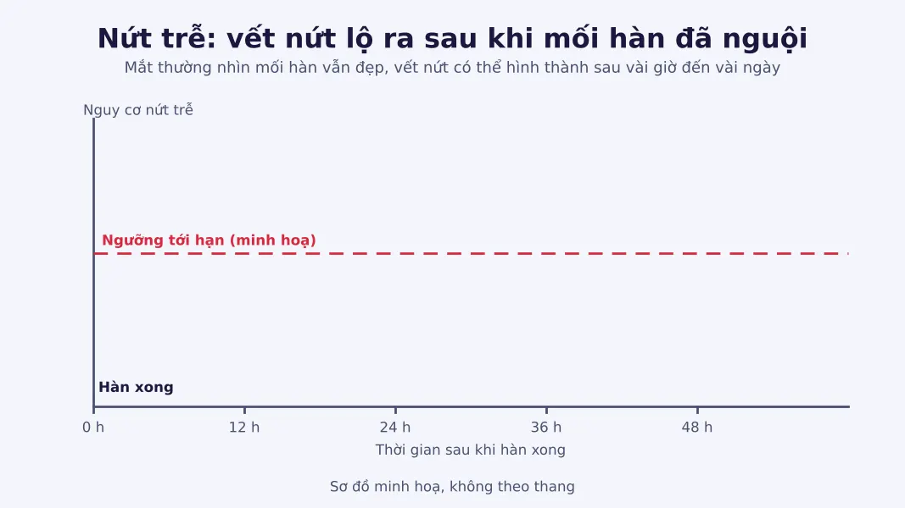
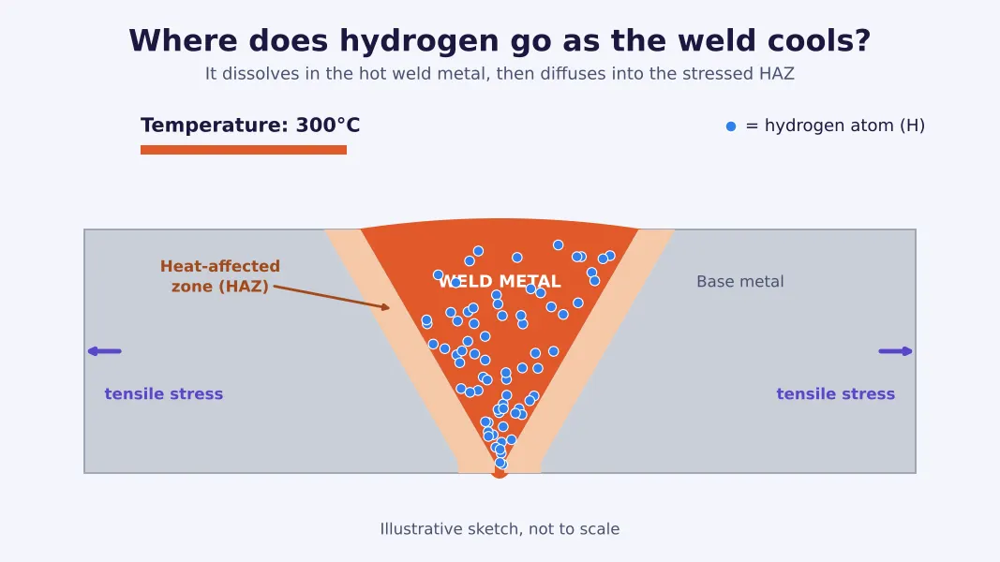
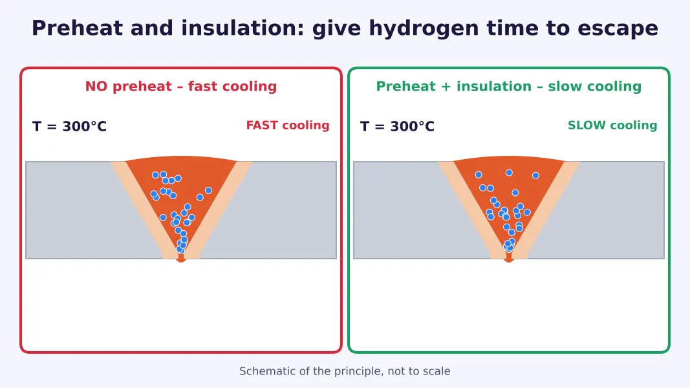
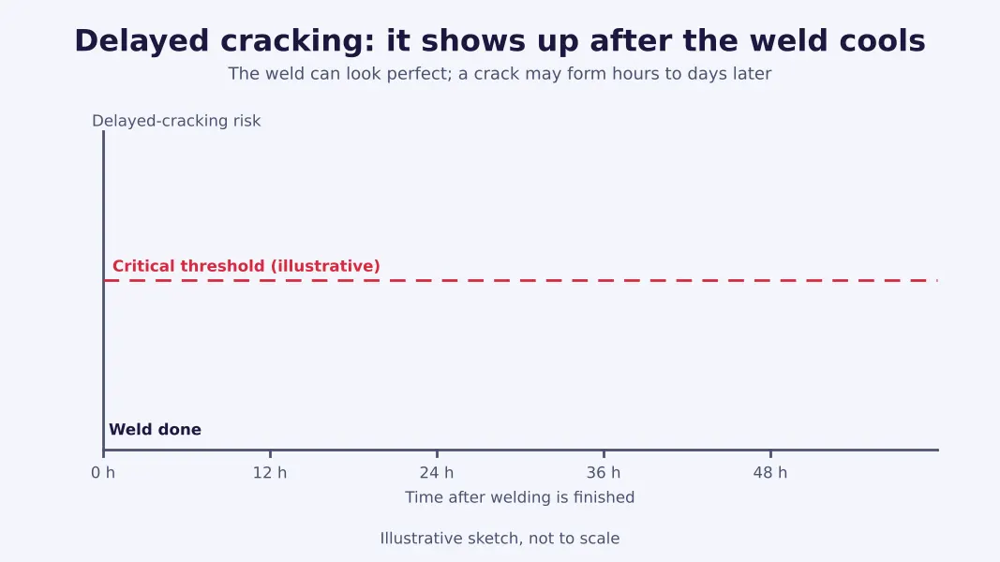

Nứt nguội (cold cracking), còn gọi là nứt trễ hoặc nứt do hydro, là loại nứt nguy hiểm nhất khi hàn thép dày vì nó xuất hiện sau khi mối hàn đã nguội, lúc mắt thường vẫn thấy mối hàn đẹp. Bài này giải thích cơ chế bằng hình ảnh động để thợ hàn, QC và giám sát hiểu vì sao mỗi quy định về sấy thuốc hàn, gia nhiệt và bảo ôn đều có lý do.
Ba yếu tố phải có cùng lúc
Nứt nguội chỉ hình thành khi đồng thời có đủ ba yếu tố sau, thường ở nhiệt độ dưới khoảng 200°C:
- Hydro khuếch tán trong kim loại hàn và vùng ảnh hưởng nhiệt (HAZ).
- Ứng suất kéo do co ngót và do kết cấu bị ngàm giữ.
- Tổ chức cứng, giòn (thường là martensite hoặc bainite) do nguội quá nhanh.
Thiếu một trong ba yếu tố thì nguy cơ nứt giảm mạnh. Toàn bộ các biện pháp kiểm soát nhiệt đều nhằm loại bỏ ít nhất một yếu tố.
Hydro từ đâu ra
- Độ ẩm trong thuốc hàn SAW, trong lõi thuốc và dây hàn FCAW, trong que hàn.
- Dầu mỡ, gỉ, nước, sơn còn sót trên rãnh hàn và mép chi tiết.
- Hơi ẩm trong khí bảo vệ và trong không khí quanh vùng hàn.
Hồ quang phân tách các nguồn ẩm này thành nguyên tử hydro. Nguyên tử hydro rất nhỏ nên hoà tan được vào kim loại hàn đang nóng chảy.
Hydro di chuyển thế nào khi mối hàn nguội
Xem ảnh động bên dưới: ban đầu các chấm xanh (hydro) nằm trong kim loại hàn. Khi nhiệt độ giảm, độ hoà tan của hydro trong thép giảm mạnh nên hydro bị đẩy ra và khuếch tán sang HAZ, rồi tụ lại ở nơi có ứng suất cao và tổ chức cứng, thường gần đường chảy và chân mối hàn. Khi hydro tụ đủ nhiều, độ dẻo của thép tại chỗ đó giảm và vết nứt bắt đầu.

Ứng suất kéo từ đâu ra
- Co ngót khi mối hàn nguội, trong khi kim loại xung quanh giữ chặt không cho co.
- Kết cấu bị ngàm cứng: tôn dày, hộp, dầm lớn có độ cứng cao nên ứng suất dư lớn.
- Lắp ghép sai lệch, khe hở lớn hơn quy định.
- Điểm tập trung ứng suất: chân mối hàn, điểm dừng, góc kết cấu.
Tổ chức giòn từ đâu ra
HAZ bị nung rất nóng rồi nguội nhanh sẽ bị "tôi", tạo tổ chức cứng và giòn. Nguy cơ này tăng khi thép có carbon tương đương cao, khi thép dày hút nhiệt nhanh khỏi vùng hàn, và khi nhiệt lượng hàn quá thấp hoặc hàn trong điều kiện thép nguội lạnh.
Vì sao thép dày nguy hiểm hơn
- Nhiệt thoát đi theo nhiều hướng nên tốc độ nguội cao hơn tôn mỏng.
- Độ ngàm lớn nên ứng suất dư cao.
- Mối hàn nhiều lớp tích luỹ nhiều hydro hơn và hydro khó thoát ra hơn.
Cách phá cơ chế nứt
Gia nhiệt, giữ nhiệt độ liên lớp và bảo ôn làm thép nguội chậm. Nguội chậm giúp hai việc: hydro có nhiều thời gian hơn để thoát ra khỏi mối hàn, và HAZ bớt cứng giòn.

- Giảm hydro: vật liệu hàn hydro thấp, sấy thuốc hàn đúng chế độ, làm sạch rãnh hàn, che gió khi hàn có khí bảo vệ.
- Làm nguội chậm: gia nhiệt trước khi hàn, giữ nhiệt độ liên lớp trong khoảng WPS cho phép, bọc bảo ôn ngay sau khi hàn.
- Khử hydro chủ động: với mối hàn CJP rất dày hoặc khi hợp đồng yêu cầu, thực hiện postheat ngay sau lớp hàn cuối để đuổi hydro ra khỏi mối hàn.
- Giảm ứng suất: lắp ghép đúng khe hở, góc vát đúng, trình tự hàn hợp lý, không dừng hàn ở góc hoặc vùng tập trung ứng suất.
Vì sao gọi là nứt trễ và vì sao phải chờ trước khi kiểm tra
Hydro cần thời gian để khuếch tán đến vị trí tập trung ứng suất, nên vết nứt có thể hình thành sau vài giờ đến vài ngày. Vì vậy mối hàn thép dày thường được kiểm tra siêu âm (UT) sau khi nguội hẳn ít nhất 48 giờ, hoặc theo thời gian chờ mà WPS, tiêu chuẩn hay hợp đồng quy định. Kiểm tra quá sớm có thể bỏ sót vết nứt chưa kịp hình thành.

Vết nứt thường nằm ở đâu
Thường ở HAZ gần đường chảy và ở chân mối hàn. Vết nứt có thể nằm dưới bề mặt (nứt dưới lớp hàn) nên không nhìn thấy bằng mắt, do đó cần MT và UT để phát hiện. Với vết nứt ngang vuông góc trục mối hàn, cần quét UT bằng đầu dò đặt trực tiếp trên Cap mối hàn (xem bài tiếp theo).
Năm ý cần nhớ
- Nứt nguội cần đủ ba yếu tố: hydro, ứng suất kéo, tổ chức cứng giòn.
- Hydro đến từ độ ẩm, dầu mỡ, gỉ: giữ vật liệu hàn khô và rãnh hàn sạch.
- Nguội chậm (gia nhiệt, liên lớp, bảo ôn) là cách hiệu quả để hydro thoát ra.
- Mối hàn trông đẹp chưa có nghĩa là không nứt vì nứt có thể xuất hiện muộn.
- Kiểm tra UT sau thời gian chờ theo quy định, với thép dày ví dụ là 48 giờ.
Bài tiếp theo trình bày cách kiểm soát nhiệt trong thực hành: Kiểm soát nhiệt chống nứt nguội cho thép dày 80–120 mm.
Cold cracking, also called delayed cracking or hydrogen-assisted cracking, is the most dangerous kind of crack in thick-plate welding because it appears after the weld has cooled, when the weld still looks perfect to the eye. This article explains the mechanism with animated figures so welders, QC and supervisors can see why every rule on flux drying, preheat and insulation exists.
Three factors that must be present together
Cold cracking forms only when all three of the following are present, usually below about 200°C:
- Diffusible hydrogen in the weld metal and heat-affected zone (HAZ).
- Tensile stress from shrinkage and from the structure being restrained.
- A hard, brittle microstructure (typically martensite or bainite) caused by cooling too fast.
Remove any one of the three and the risk drops sharply. All heat-control measures aim to remove at least one of them.
Where hydrogen comes from
- Moisture in SAW flux, in FCAW flux-cored wire and in electrodes.
- Oil, grease, rust, water and paint left on the groove and joint edges.
- Moisture in the shielding gas and in the air around the weld.
The arc splits these moisture sources into hydrogen atoms. Hydrogen atoms are tiny, so they dissolve into the molten weld metal.
How hydrogen moves as the weld cools
Watch the animation below: at first the blue dots (hydrogen) sit in the weld metal. As the temperature falls, the solubility of hydrogen in steel drops sharply, so hydrogen is driven out and diffuses into the HAZ, then collects where stress is high and the microstructure is hard, usually near the fusion line and the weld root. Once enough hydrogen has gathered, the steel loses ductility there and a crack starts.

Where tensile stress comes from
- Shrinkage as the weld cools while the surrounding metal holds it back.
- Rigid restraint: thick plate, boxes and large beams are stiff, so residual stress is high.
- Poor fit-up or root gaps larger than specified.
- Stress raisers: weld toes, weld start/stop points and structural corners.
Where the brittle microstructure comes from
A HAZ that is heated to a very high temperature and then cooled fast is effectively "quenched", giving a hard, brittle structure. The risk grows with higher carbon equivalent, with thick steel that pulls heat away quickly, and with very low heat input or welding on cold steel.
Why thick steel is more dangerous
- Heat escapes in several directions, so cooling is faster than in thin plate.
- Restraint is high, so residual stress is high.
- Multipass welds accumulate more hydrogen, and it escapes less easily.
How to break the cracking mechanism
Preheat, interpass control and insulation make the steel cool slowly. Slow cooling does two things: hydrogen has more time to escape from the weld, and the HAZ is less hard and brittle.

- Reduce hydrogen: low-hydrogen consumables, correct flux drying, clean grooves, wind shelter when welding with shielding gas.
- Cool slowly: preheat before welding, keep interpass temperature within the WPS range, insulate immediately after welding.
- Drive hydrogen out deliberately (hydrogen bake-out): for very thick CJP welds, or when the contract requires it, apply postheat right after the last pass to expel hydrogen from the weld.
- Reduce stress: correct fit-up gaps, correct groove angle, a sound welding sequence, no weld start/stop points at corners or stress concentrations.
Why it is called delayed cracking and why you must wait before inspecting
Hydrogen needs time to diffuse to the stress concentration, so a crack can form hours to days after welding. That is why thick-plate welds are usually ultrasonically tested (UT) only after cooling completely for at least 48 hours, or after whatever waiting time the WPS, standard or contract specifies. Testing too early can miss cracks that have not yet formed.

Where cracks usually are
Usually in the HAZ near the fusion line and at the weld root. A crack can sit below the surface (underbead cracking) and be invisible to the eye, which is why MT and UT are needed to find it. For transverse cracks running square to the weld axis, UT must be done with the probe placed directly on the weld cap (see the next article).
Five points to remember
- Cold cracking needs all three factors: hydrogen, tensile stress and a hard, brittle microstructure.
- Hydrogen comes from moisture, oil and rust: keep consumables dry and grooves clean.
- Slow cooling (preheat, interpass, insulation) is the effective way to let hydrogen escape.
- A good-looking weld does not mean a crack-free weld, because cracks can appear late.
- Run UT after the specified waiting time; for thick steel an example is 48 hours.
The next article covers heat control in practice: Heat control to prevent cold cracking in 80–120 mm steel.